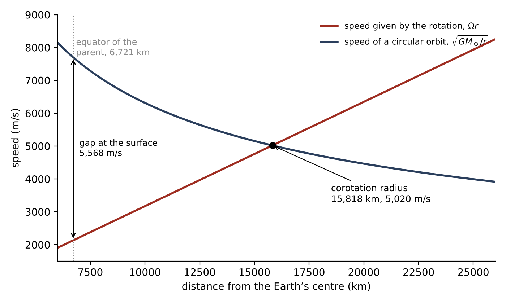

LEF Mechanism in Principle — short version
Corotation and the angular-momentum budget of a Moon released from the Earth
This is the short version of Paper 2, prepared for journal submission. The full Paper 2 sets out every step, appendix and table.
Material that turns with a spinning planet moves faster the farther it lies from the axis, while the speed of a free circular orbit falls with distance. At the corotation radius the two are equal, and material released there is already in orbit. We propose that the Moon was released from the Earth at this radius, carried out while still attached and turning with its parent, rather than launched from the surface. For a young, hot, expanded Earth of uniform density with a 5.5-hour day, the corotation radius lies at 15,818 km and the orbital speed there is 5,020 m s. The angular momentum of such a parent is kg m s, 0.7% above that of the present Earth–Moon system, the small surplus that solar tides later removed. Carrying the lunar mass outward slows the Earth; the sinking of iron toward the centre speeds it up. Solved together, with a core twice as dense as the mantle above it, they give a day of 5.77 h and a release radius of about 16,400 km, where the Moon’s orbit holds 17% of the budget. The classical fission route, which demands orbital speed at the surface, needs 2.74 times the present angular momentum; this route needs 1.007 times. The paper states what the mechanism must supply — among them survival near the Roche limit — and the tests that can refute it.
Keywords: Moon formation; corotation radius; angular momentum; rotational fission; Maclaurin spheroid; Earth–Moon system
The Moon reached orbit without being thrown: it was carried outward while attached to the Earth and turning with it, and was released at the corotation radius, where the speed it already had was the speed of an orbit.
The angular momentum this requires is present in a young, expanded Earth that held, within 1%, the angular momentum of today’s Earth–Moon system. No external impactor and no later removal of a large surplus are needed.
The release state — day length, release radius, shape of the Earth, division of angular momentum — follows from one closed set of numbers, given in Section 5.
What the route requires of its mechanism is collected in Section 6; the tests that can refute it are in Section 7.
1Introduction
Two questions must be answered by any account in which the Moon is made of the Earth’s own material. The first is how the material came to move at orbital speed. The second is whether the angular momentum available at the start permits the end state we observe. A compositional match between the two bodies supports a shared source, but it says nothing about how one of them came to circle the other. This paper addresses the dynamics only.
Fission was the first physical theory of the Moon’s origin. Darwin proposed that a fast-spinning, molten Earth shed the Moon by resonance with the solar tide [1]. Wise suggested that the sinking of iron into the core spun the Earth up until it divided [2], and Binder developed the idea further after the Apollo missions [3]. All of these routes share one condition: the Earth’s surface must reach orbital speed, so that material can leave from it. That condition drives the parent to rotational break-up, and break-up requires several times the angular momentum the Earth–Moon system holds. This is the classical objection, and it is the main reason fission was set aside in favour of a giant impact [4, 5, 6].
We propose that the objection belongs to the release condition, not to fission as such. If the material leaves from the surface, the gap between its speed and orbital speed is large (Section 2). If instead it is carried outward while still attached and turning with the Earth, the speed it carries grows with distance, and at one distance — the corotation radius — it equals the speed of an orbit. Released there, the material needs no push. The question of the budget then changes: it is no longer what it costs to break the Earth apart, but what it costs to carry one lunar mass out to the corotation radius in corotation.
This paper computes that cost. Section 2 derives the corotation condition. Section 3 defines the parent. Section 4 builds the angular-momentum budget and compares it with today’s system and with the classical route. Section 5 solves the release state. Section 6 collects what the mechanism must supply, and Section 7 the tests. Throughout, the material is carried outward while still attached to the Earth and turning with it; this paper uses only the mass carried and the radius reached.
2The corotation condition
2.1Release from the surface
Consider first material let go from the equator of a parent turning once every h with an equatorial radius km (Section 3). The angular velocity is The speed the rotation gives to a point on the equator, and the speed of a circular orbit at the same distance, are The gap is about 5,568 m s. Material leaving from the surface falls back unless something supplies this difference. Closing the gap at the surface by spinning the parent faster is the classical route, and its cost is examined in Section 4.5.
2.2Release at the corotation radius
Material that stays attached and turns with the parent at distance moves at , which grows with ; the circular orbital speed falls with . They are equal at one radius: The first form says that, in the frame turning with the parent, the outward acceleration of the rotation balances gravity; the second shows that the radius grows as . For m s and h:
This is the central number of the paper. At 15,818 km, about 2.4 times the parent’s equatorial radius, material that turns with a 5.5-hour Earth already moves at the speed of a circular orbit (Fig. 1). The corotation formula is standard two-body mechanics [8]; what is new is its use as the release condition of a connected transfer. When the Moon’s own mass is included, becomes ; this two-body form is used for the release state in Section 5.

2.3What the condition means for release
In the turning frame, material at distance feels the net acceleration Inside the corotation radius points toward the Earth, so material there stays bound to its parent; outside it, points outward. A body whose centre of mass crosses the line is therefore drawn away from the Earth as a whole.
3The parent
The parent is the young Earth before the lunar mass was separated from it: its mass is kg. We describe it by three properties.
Hot and expanded. A young Earth heated by accretion and by the energy of core formation was larger than a cold body of the same mass. We adopt a thermal expansion of 120 km, giving a volume-equivalent radius of 6,517 km and a mean density of 5,214 kg m; the admissible range is examined in Section 4.4.
Early in its internal sorting. At the start of the transfer the core had only begun to form, and the mass was distributed nearly uniformly. We therefore take the moment-of-inertia coefficient of a uniform body, , as the input. Today’s Earth, with its dense core, has .
Fast spinning and flattened. A uniform fluid body in steady rotation takes the shape of a Maclaurin spheroid [9], flattened at the poles. Its eccentricity is fixed by the spin: For a 5.5-hour day this gives an equatorial radius km and a polar radius km.
Why 5.5 hours. The initial day is not a free choice. Returning today’s total angular momentum of the Earth–Moon system, kg m s (Section 4.3), to the spin of this parent gives h. Solar tides have removed about 1% of the system’s angular momentum since then [10]; the early system held slightly more, and its day was correspondingly slightly shorter. We adopt 5.5 h.
| Quantity | Value | Status |
|---|---|---|
| Total mass, | kg | sum of Earth and Moon |
| Lunar mass, | kg | present value |
| Initial day, | 5.5 h | from today’s budget (Section 3) |
| Volume-equivalent radius | 6,517 km | adopted, 120 km expansion |
| Equatorial / polar radius | 6,721 / 6,128 km | Maclaurin equation |
| Mean density | 5,214 kg m | from mass and radius |
| Moment-of-inertia coefficient, | 0.4 | uniform body (input) |
4The angular-momentum budget
4.1The initial budget
The moment of inertia and angular momentum of the reference parent are
This is the whole reservoir the route has to work with.
4.2The cost of the transfer
Before the transfer, the lunar material is part of the parent and carries its share of the spin. For a uniform distribution its mean squared distance from the axis is that of the whole body: Carried to the corotation radius while still turning with the parent, the same mass holds about fourteen times more, because the distance from the axis enters squared. The difference must come from the parent’s spin; no external torque acts, so this is a redistribution within the system: The transfer thus hands about one sixth of the parent’s angular momentum to the material, and the parent slows accordingly. The figure depends on where the material comes from: an equatorial surface source, which already carries more angular momentum, needs about 13.8%; a source deeper in the interior, at half the radius, about 16.5%.
4.3Comparison with the present system
Today the Earth’s spin and the Moon’s orbit hold with the reduced mass, m and . The scalar sum is , of which 83% now lies in the orbit. The parent’s budget exceeds it by 0.7%. The sign is the one required: the parent held slightly more than the system holds today, and solar tides have removed about 1% since.
The spin and orbital vectors are not parallel, because the Earth’s axis is tilted to the lunar orbit. Adding them as vectors at test angles of 18.3, 23.4 and 28.6 gives a smaller total, and the surplus rises to 1.46%, 1.92% and 2.51%. We use the scalar sum as the baseline and the vector sum as a sensitivity range.
4.4Sensitivity to period, expansion and structure
A shorter day means more angular momentum; a more expanded parent holds the same angular momentum at a longer day. With 120 km of expansion the admissible initial day lies between 4.90 h, where the parent holds 15% more than today’s system (the adopted ceiling for external loss), and 5.54 h, where it holds exactly today’s value. The reference value, 5.5 h, lies inside this window, near its upper edge. The admissible expansion is 98–520 km.
The surplus also depends on how uniform the parent was. At fixed shape the budget equals today’s at (scalar) or 0.390–0.394 (vector range). A parent already as differentiated as today’s Earth () would fall short. The route therefore requires that the transfer began early in the Earth’s internal sorting; this is listed in Section 6.
4.5The classical route compared
A uniform spinning fluid passes through a known sequence of shapes as its angular momentum grows: Maclaurin spheroids, then, beyond a bifurcation point, the elongated Jacobi ellipsoids, and further along a pear-shaped figure from which classical fission was expected to proceed [9]. At the Maclaurin–Jacobi bifurcation, and ; for the adopted mass and volume this means a day of 2.73 h, an equatorial radius of 7,802 km and an angular momentum of — 2.74 times today’s value. Merely reaching the first stage of the classical route requires a day shorter than three hours and almost three times the angular momentum available.
| Route | Speed matched at | Day | Angular momentum relative to today |
|---|---|---|---|
| Classical fission (Maclaurin–Jacobi point) | parent’s surface | 2.73 h | 2.74 |
| Corotating transfer (this paper) | corotation radius | 5.5 h | 1.007 |
The difference lies entirely in where the speed condition is evaluated. The classical route requires the surface to reach orbital speed, and that pushes the parent to break-up. The corotating route evaluates the condition at the corotation radius, where a parent turning once every 5.5 hours already supplies orbital speed, and the requirement falls to the budget the parent actually holds.
5The release state
Two processes change the Earth’s spin during the transfer, and they act together. Carrying mass outward also carries angular momentum outward, and slows the Earth. The sinking of iron toward the centre lowers the Earth’s moment of inertia and speeds it up, as a skater does by drawing in her arms. Table 3 follows the evolution step by step; red rows slow the Earth and move the corotation line outward, the blue row speeds it up and moves the line inward.
| Step | Day | Corotation line | Effect |
|---|---|---|---|
| 1. Reference parent | 5.50 h | 15,818 km | starting point |
| 2. Mass carried outward (alone) | 6.44 h | 17,569 km | slows; line outward |
| 3. Core centralises () | h | — | speeds up; line inward |
| 4. Combined (test particle) | 5.77 h | 16,331 km | net: modest slowing |
| 4a. Combined (two-body) | 5.77 h | 16,399 km | adopted |
| 5. Moon’s centre on the line | 5.77 h | 16,400 km | release |
Day and spin at release. Solving the two processes together, with a core twice as dense as the mantle above it (), gives The day is only a quarter of an hour longer than at the start, because the speed-up from the sinking iron cancels most of the slowing.
Release radius. The Moon separates when its centre of mass reaches the corotation line, written for two bodies: about 2.6 times today’s Earth radius. The orbital speed there is m s, a little below the 5,020 m s of the reference state because the line has moved outward. For a body of one lunar mass at 2,600 kg m, km, so the Moon’s near side lies at 14,509 km and its far side at 18,289 km.
Shape of the Earth at release. The Maclaurin equation for a 5.77-hour day gives km and km. The Earth at release remains clearly flattened (Fig. 2).
Division of angular momentum. At release where the Moon’s orbit holds (17% of the budget) and the Earth’s spin . For the Earth’s spin to carry at a 5.77-hour day, its moment-of-inertia coefficient must be . A two-layer Earth, with an inner layer reaching a fraction of the radius at times the density of the outer layer, has which for and gives 0.360. The structure produced by the sinking iron agrees with the angular momentum the release state demands.
Day at release 5.77 h;Moon’s centre at 16,400 km;total angular momentum 1.007 times today’s.

The first orbit. Exactly on the line the tide is neutral. Separation takes place when the Moon’s centre has moved a small margin beyond the line, about 210 km; there the Earth turns faster than the Moon orbits, the tidal bulge leads the Moon, and the Moon recedes from the start. A release slightly beyond the line also makes the first orbit slightly eccentric, which is what today’s eccentricity requires; the orbital evolution itself is outside the scope of this paper.
6What the mechanism must supply
The route closes its velocity condition and its angular-momentum budget with one set of numbers. It places the following requirements on the mechanism that carries the material out. Each is stated here as a condition.
| Requirement | Value or condition |
|---|---|
| Early internal structure | The transfer begins while the Earth is nearly uniform, at the start (Section 4.4). |
| Thermal expansion | 120 km adopted; admissible 98–520 km. |
| Continuous core sinking | Core centralisation acting through the transfer; without it the outward transfer alone would slow the Earth to 6.44 h. |
| Survival near the Roche limit | Release at 16,400 km lies outside the rigid Roche limit (9,500–13,000 km for 1,300–3,344 kg m) but inside the fluid limit for 2,600 kg m (about 20,000 km) [8]. The Moon must leave as a body rigid enough to resist tidal deformation. |
None of these requirements enters the corotation radius, which follows from the parent’s mass and spin alone.
7Tests and refutation criteria
The claims of the paper are of three kinds: physical identities, consistency tests of the numbers, and requirements passed to the mechanism. They are tested differently.
| Claim (kind) | What it states | How it is tested |
|---|---|---|
| Corotation (identity) | At the speed carried by rotation equals orbital speed. | Reproduction of both speeds; corrections for a flattened field and the Moon’s finite size. |
| Budget closure (consistency) | suffices for release at 16,400 km. | Matching the budget before and after release, through the structure and the solar-tide loss. |
| Sensitivity to structure (computed) | A change of or changes the day and the line as computed. | Full scan of and ; convergence of the coupled solution. |
| Off-equator release (geometric) | A release off the equator changes the budget only by the vector correction. | Vector sum of all components in one frame. |
| Survival (requirement) | The Moon survives the tide at release. | Rigidity and structure of the young Moon at release. |
The route is refuted if any of the following is shown:
that the Earth’s internal sorting was already advanced ( well below 0.397) before the Moon’s material could have left it, so that the parent’s budget falls short of today’s;
that the total angular momentum of the early Earth–Moon system differed from today’s by much more than the few per cent solar tides can account for, in either direction;
that the young Moon could not have been rigid at the time and place of release.
8Conclusions
A body of the Moon’s mass can reach orbit from the Earth’s own material without a giant impact. The fast spin of a young, expanded Earth supplies the speed; the material is carried to the corotation radius while still attached and turning with the Earth; the slowing caused by carrying the mass outward and the speed-up caused by the sinking iron together set a day of 5.77 h at release; the Moon’s centre reaches the corotation line at about 16,400 km; and the angular-momentum budget closes at 1.007 times today’s, consistent with the small loss to solar tides. The classical objection to fission — a budget several times larger than available — arises from requiring orbital speed at the surface. When the speed condition is evaluated at the corotation radius, the objection does not arise.
Declarations
Funding. This work received no funding.
Competing interests. The author declares no competing interests.
Author contributions. Z.D. is the sole author: he conceived the model, performed the calculations and wrote the manuscript.
Data availability. No new observational data were generated. All input values are given in the text and tables.
Code availability. The scripts that reproduce the numbers in this paper are available as part of the LEF series record on Zenodo, https://doi.org/10.5281/zenodo.22743615.
Use of AI tools. Claude (Anthropic) was used for language editing, checking of calculations and typesetting. The ideas, the model and the conclusions are the author’s, and he takes full responsibility for the content.
Prior posting. An extended version of this work is posted as a preprint in the LEF series on Zenodo [7]; it has not been peer reviewed.
References
- Darwin GH. On the precession of a viscous spheroid, and on the remote history of the Earth. Philos Trans R Soc Lond. 1879;170:447–538. https://doi.org/10.1098/rstl.1879.0073
- Wise DU. An origin of the Moon by rotational fission during formation of the Earth's core. J Geophys Res. 1963;68(5):1547–1554. https://doi.org/10.1029/JZ068i005p01547
- Binder AB. On the origin of the Moon by rotational fission. The Moon. 1974;11:53–76. https://doi.org/10.1007/BF01877794
- Canup RM. Simulations of a late lunar-forming impact. Icarus. 2004;168:433–456. https://doi.org/10.1016/j.icarus.2003.09.028
- Canup RM. Forming a Moon with an Earth-like composition via a giant impact. Science. 2012;338:1052–1055. https://doi.org/10.1126/science.1226073
- Ćuk M, Stewart ST. Making the Moon from a fast-spinning Earth: a giant impact followed by resonant despinning. Science. 2012;338:1047–1052. https://doi.org/10.1126/science.1225542
- Duran Z. Lunar Elevation and Fission (LEF): a series of papers on the origin of the Moon. Zenodo. 2026. https://doi.org/10.5281/zenodo.22743615
- Murray CD, Dermott SF. Solar System Dynamics. Cambridge: Cambridge University Press; 1999. https://doi.org/10.1017/CBO9781139174817
- Chandrasekhar S. Ellipsoidal Figures of Equilibrium. New Haven: Yale University Press; 1969.
- Eulenfeld T, Heubeck C. Constraints on Moon's orbit 3.2 billion years ago from tidal bundle data. J Geophys Res Planets. 2023;128(1):e2022JE007466. https://doi.org/10.1029/2022JE007466